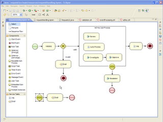

jbpm-examples (part 2)
One example that is part of the jbpm-examples module is the request example, an advanced example that shows you how you could use a BPMN2 process to handle incoming requests. The process uses some of the more advanced features to model flexibility in your process in combination with business rules to specify part of the business logic.

The example itself is available in the jbpm-examples module so you can download and try it out yourself, but here are two small screencasts that show it in action. It uses a very simple demo client (that was created for this demo to make it easier to show some of the features). Some of these features are:
- request validation using a business rule task
- ad-hoc sub-process where the user can select process fragments to execute
- dynamically adding a new sub-process to an ad-hoc sub-process
- dynamically adding a business rule to automate fragment triggering
- complex event processing to monitor the process engine
The demo can be found here:
request demo part 1
request demo part 2

{kind=link}